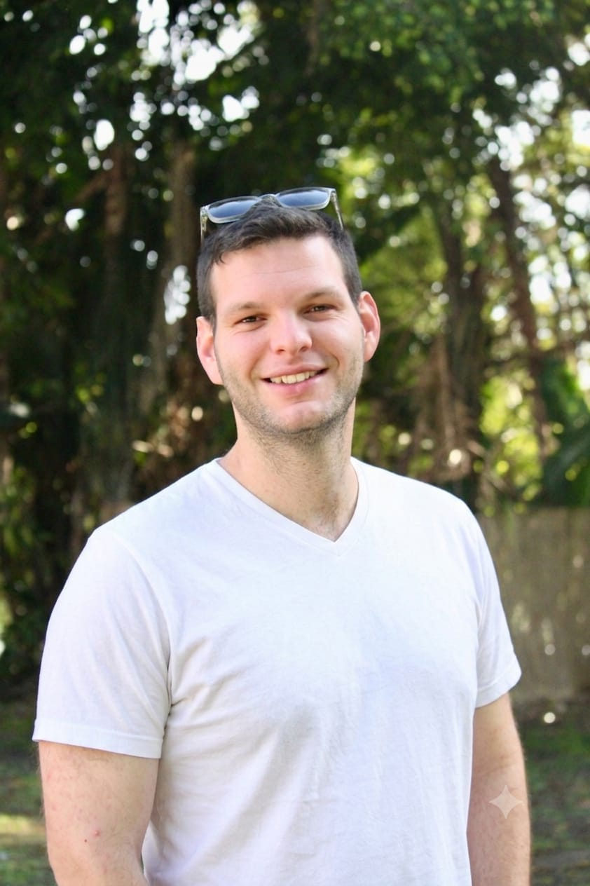

מתניה גרינוולד
ראש המכינהגדל בבית שמש וכיום תושב מושב פארן. בעל תואר ראשון במדעי החברה ותואר שני בייעוץ ארגוני מבר-אילן. מתנדב במד"א ומשרת במילואים, מתוך תחושת זכות גדולה. מאמין גדול בחיבורים אנושיים שמרבים טוב, ובתהליך חינוכי מצמיח שבו יש ערך עמוק לדרך ולא רק ליעד.